地政学
サンパウロは首都ではないが、金融、市場、空港、報道、大学、企業本社を通じてブラジルの政策と国際取引に強い影響を持つ。内陸高原から港と農業地帯を結び、南米経済を動かす重心である。港湾政策にも近い都市。
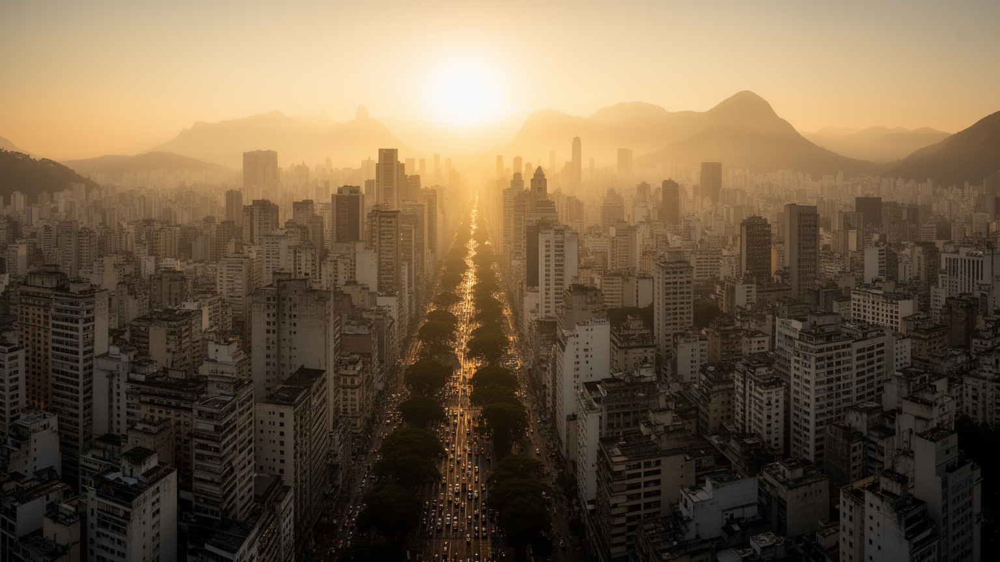
🇧🇷 ブラジル / 南米 / World City Atlas
高原の移民都市から南米最大級の経済中枢へ成長し、金融、工業、食、宗教、交通、格差、文化制作が圧縮されるブラジルの巨大都市圏。
都市の骨格
港ではなく内陸の高原にあるサンパウロは、鉄道、道路、空港、金融、大学、移民街、工業地帯を結び、ブラジル経済と南米の人の流れを引き寄せている。
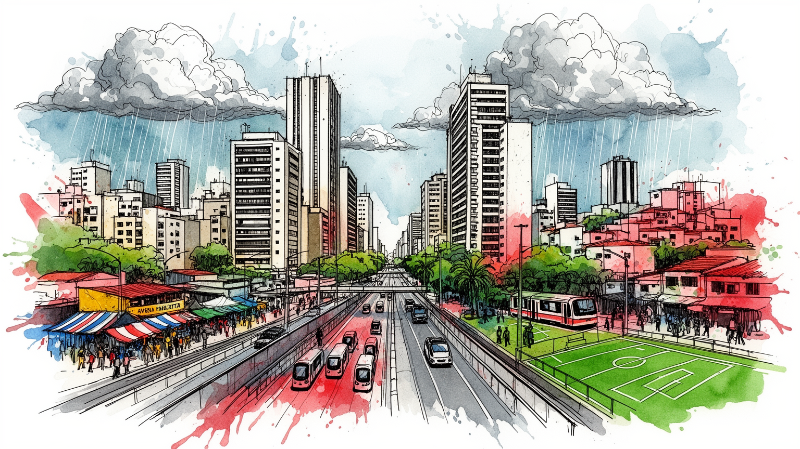
サンパウロは首都ではないが、金融、市場、空港、報道、大学、企業本社を通じてブラジルの政策と国際取引に強い影響を持つ。内陸高原から港と農業地帯を結び、南米経済を動かす重心である。港湾政策にも近い都市。
金融、自動車、食品、医療、教育、広告、航空、物流が集中し、専門職と工場労働、配達、家事労働が同じ都市圏で交差する。富を生む都市であるほど、通勤と雇用の不安も大きい。生活サービスも経済を支える。日々。
イタリア系、日系、アラブ系、ユダヤ系、北東部出身者、アフリカ系の記憶が街区ごとに重なり、カトリック、福音派、アフロブラジル信仰、食、音楽、祭りが都市文化を厚くする。移民の記憶も今の街を結ぶ。深く。
パウリスタ大通り、美術館、市場、リベルダージ、イビラプエラ公園、サッカー、食文化は観光客を引きつける。同時に住宅費、渋滞、治安、水害、格差が住民の日常を形づくる。旅と生活が同じ道を使う。毎日の街。
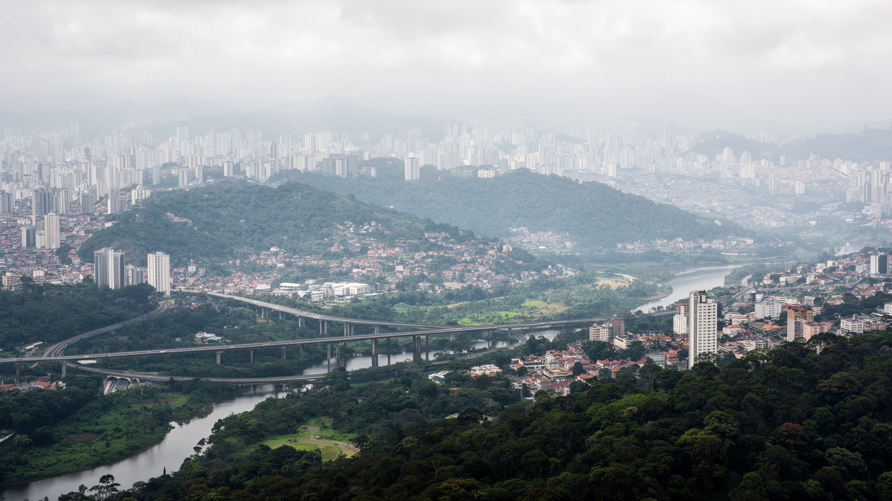
サンパウロは海辺の首都でも港町でもなく、標高のある高原に広がる内陸都市である。この位置は都市の性格を大きく決めている。植民地期の街道、コーヒー経済を運んだ鉄道、サントス港へ下る物流回廊、周辺の工業都市、空港群が、海から離れた場所を南米有数の結節点に変えた。中心部から郊外へ伸びる道路と鉄道は、労働者の長い通勤、貨物輸送、大学や病院への移動を支える一方、渋滞と大気汚染を悪化させる。河川は景観資源というより、排水、洪水、道路建設、環境再生の課題として都市に残る。高原の涼しさは熱帯的なイメージを和らげるが、夏の雷雨は低地や谷筋に被害をもたらす。サンパウロを理解するには、港ではなく、内陸から港と農業地帯を結ぶ都市として読む必要がある。都市圏の外縁には貯水池、工業団地、物流施設、低所得住宅地が広がり、中心の金融街と同じ水、電力、道路に依存している。中心と周縁の距離は、地形だけでなく収入、移動手段、行政サービスの差として感じられる。高原都市の成長は、自然の谷筋や流域を道路と建物で覆う過程でもあり、豪雨のたびに都市計画の弱点を露出させる。地形を読むと、なぜ道路が川沿いを走り、なぜ低地の住宅が水害に弱く、なぜ物流が内陸と港の間で都市を押し広げたのかが分かる。地図の余白にも都市の圧力が残り続けるためだ。
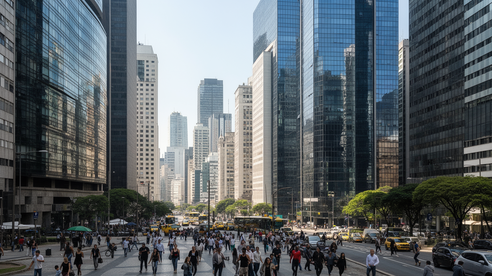
ブラジルの政治首都はブラジリアだが、経済の意思決定はサンパウロに厚く集まる。銀行、証券、保険、法律事務所、広告代理店、メディア、企業本社、大学、病院、国際見本市は、投資、雇用、消費、世論を動かす回路を作っている。パウリスタ大通りやファリア・リマ周辺は、金融とスタートアップの象徴であると同時に、家賃、警備、交通、飲食、清掃の労働を大量に必要とする場所でもある。首都でない都市がこれほど政治的な重みを持つのは、税収、企業献金、メディア発信、専門職ネットワークが国家政策に影響するからである。一方で、経済力の集中は地方との格差や不動産価格の上昇を強める。サンパウロの権力は官庁の建物より、会議室、取引所、法律文書、テレビ討論、企業の採用に現れる。ブラジルの通貨、金利、農産物輸出、インフラ投資、民営化をめぐる判断は、遠い州の生活にも影響するが、その議論の多くはこの都市の専門家集団を通って可視化される。金融街の近くでは抗議行動や労働者の行進も起こり、経済権力に対する異議申し立てが街路に現れる。市場の速度と民主的な要求が近い距離でぶつかる点に、サンパウロの首都でない首都性がある。企業の決算や政策発表は、株価だけでなく雇用、家賃、店舗の入れ替わりにも波及する。都市の中心は、数字が生活へ翻訳される場所でもある。
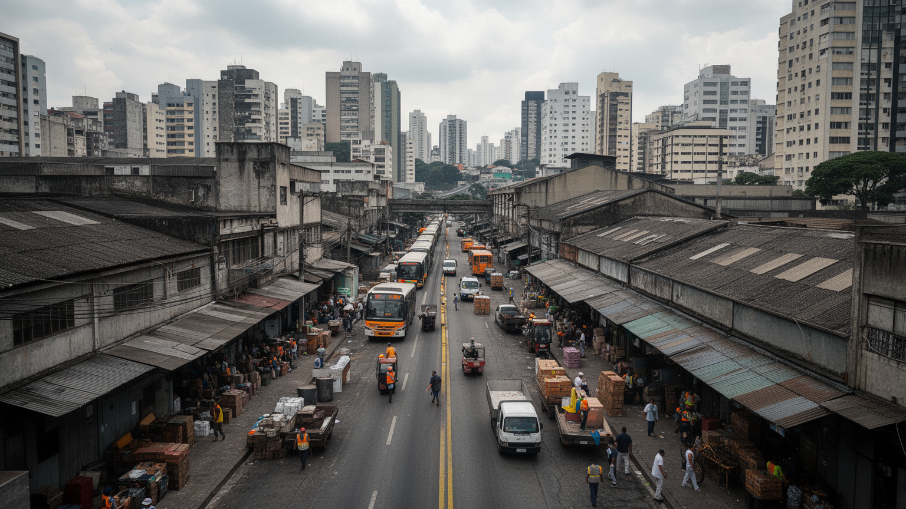
サンパウロの成長は、コーヒー資本、鉄道、移民労働、工場、国内市場の拡大と深く結びついている。自動車、機械、化学、食品、印刷、繊維は周辺のABC地域や郊外工業地帯を含めて都市圏を形づくり、労働組合と政治運動の重要な舞台にもなった。現在は金融、医療、教育、情報、広告、物流の比重が高まったが、工場や倉庫、修理、建設、清掃、配送、家事労働が都市の基盤であることは変わらない。アプリ配送や臨時雇用は柔軟な仕事を広げる一方、社会保障や安全を弱める。高所得の専門職が集まる地区の近くで、長時間通勤する低賃金労働者がサービスを支える構図は鮮明である。サンパウロの産業を読むには、企業本社だけでなく、労働者の通勤時間、組合の歴史、非公式経済まで見る必要がある。工場跡はロフト、大学、商業施設、文化拠点へ転用されることもあり、産業構造の変化は街並みにも現れる。だが製造業の記憶が薄れるほど、技能労働の継承や中小工場の場所は見えにくくなる。都市の強さは新しいサービスだけではなく、修理し、運び、組み立て、清掃し、食事を作る仕事の厚みに支えられている。労働運動の記憶は、賃金だけでなく民主化、地域組織、公共交通の要求にもつながった。働く人の声を抜きにすると、サンパウロの経済史は半分しか見えない。その記憶は今も職場に残る。
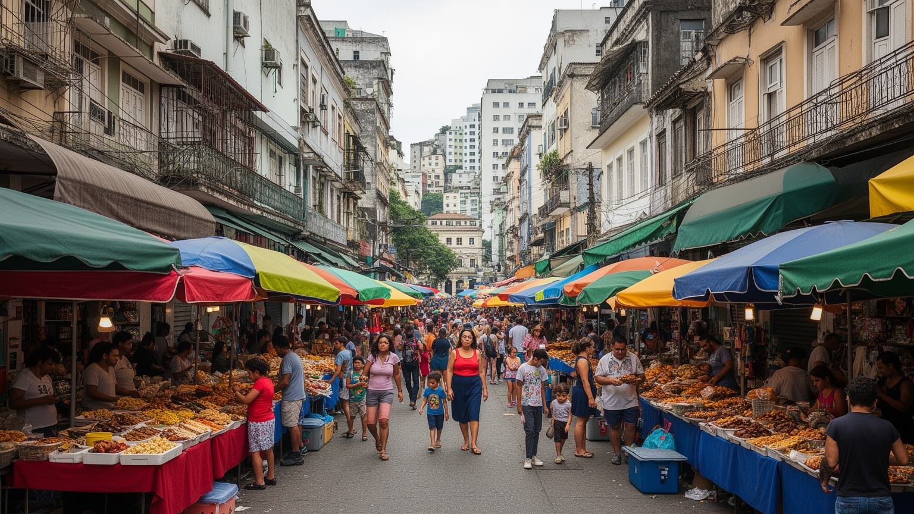
サンパウロは移民の都市である。イタリア系、ポルトガル系、日系、アラブ系、ユダヤ系、ボリビア系、韓国系、さらにブラジル北東部から来た人びとが、工場、商店、飲食、宗教施設、学校、家族経営の店を通じて街を作ってきた。リベルダージは日系文化の象徴として知られるが、単純な観光地区ではなく、移民の労働、戦争の記憶、世代交代、アジア系コミュニティの変化が重なる場所である。ブラスやボン・レチーロでは衣料、卸売、移民労働、宗教施設が密接に結びつく。多文化性は食や祭りの豊かさを生む一方、言語、在留資格、労働搾取、差別、住宅の不安定さも伴う。サンパウロの都市文化は、異なる出自の人びとが互いに完全に混ざるというより、街区ごとの商いと生活で接点を作り続けることで成り立っている。家庭料理、葬儀、学校、新聞、クラブ、スポーツチームは、世代を越えて出自の記憶を伝える装置になった。移民の子どもや孫はブラジル社会の一員として生きながら、名前、食、宗教、言語の断片を都市の中に残す。新しい移民が加わるたび、古い移民街は固定された遺産ではなく、働く人びとの交渉の場として更新される。移民街を歩くことは、観光的な異国情緒を消費することではなく、誰が店を開き、誰が縫製し、誰が言葉を翻訳して暮らしを支えたのかを考えることでもある。今も。
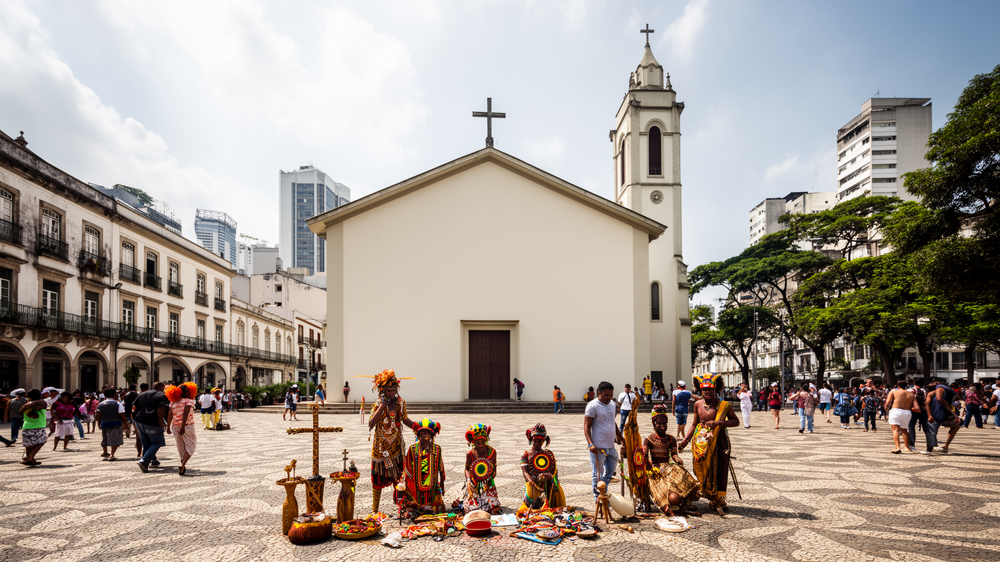
サンパウロの宗教地図は多層的である。カトリック教会は植民地期からの聖堂、祭礼、学校、慈善を通じて都市に根を持ち、近年は福音派教会が郊外や低所得地区で強い存在感を示している。アフロブラジル宗教は音楽、身体、先祖、自然との関係を保ちながら、偏見や宗教的不寛容とも向き合う。ユダヤ教、イスラム教、仏教、東方系教会、スピリティズムも移民の歴史と結びつき、街区ごとに祈りの場所を作っている。宗教は礼拝だけでなく、貧困支援、薬物依存からの回復、家族相談、政治的動員、葬儀、地域の安全感にも関わる。選挙や公共政策の議論では、宗教的価値観が教育、治安、ジェンダー、福祉の争点に触れる。サンパウロを読むには、教会や寺院を観光建築として見るだけでなく、都市の不安と連帯を受け止める社会基盤として見る必要がある。礼拝後の食事、寄付、音楽、青少年活動、移民の相談窓口は、行政だけでは届きにくい支援を補う。宗教施設は時に保守的な規範を強めるが、孤立した人に居場所を与える力も持つ。祈りは私的な行為であると同時に、都市の公共性を作る日常的な実践でもある。大都市の孤独や暴力への不安が強いほど、人は信仰共同体に安心を求める。宗教の影響を読むことは、都市の弱さと支えの両方を見ることになる。その力は選挙にも福祉にも届き続ける。今も。
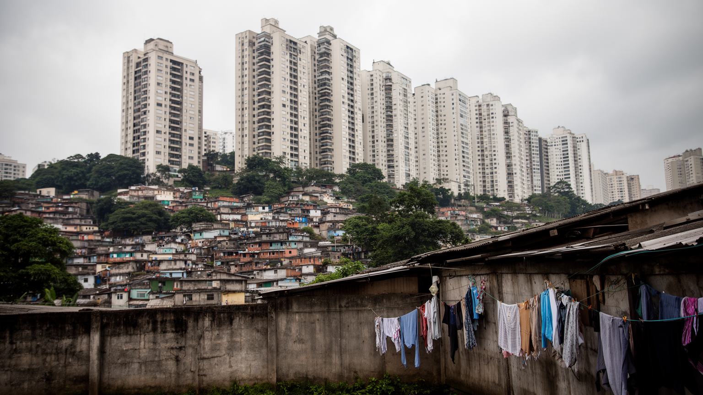
サンパウロの暮らしは、住宅の場所によって大きく変わる。中心部や西側の高所得地区には高層マンション、警備付き住宅、オフィス、大学、病院、文化施設が集中し、郊外や周縁部には長い通勤を強いられる住宅地やファヴェーラ、非正規に形成された地区が広がる。住民は職場に近い場所ほど家賃が高く、手頃な住宅を求めるほどバスや電車で何時間も移動することになる。水道、下水、排水、舗装、学校、医療、治安へのアクセスは地区ごとに差があり、豪雨時には弱い場所ほど被害を受けやすい。ジェントリフィケーションは中心部の空きビルや歴史地区を変えるが、低所得者の退去やホームレスの増加も招く。サンパウロの格差は遠く離れた問題ではなく、同じ通りの警備員、清掃員、店員、住民、通勤者の関係として毎日経験される。都市の豊かさは、誰がどこに住めるかを見なければ測れない。住宅運動は空きビル占拠や公共住宅要求を通じて、中心部に住む権利を訴えてきた。周縁の住民にとって、住所は通勤費、学校の選択、医療への到達、警察との関係まで左右する。家は単なる私有財産ではなく、都市への参加権そのものに近い意味を持っている。住宅の不安定さは家族の教育、健康、仕事の継続を揺らす。安定した住まいを確保できるかどうかが、巨大都市で人生を組み立てる前提になる。今も。
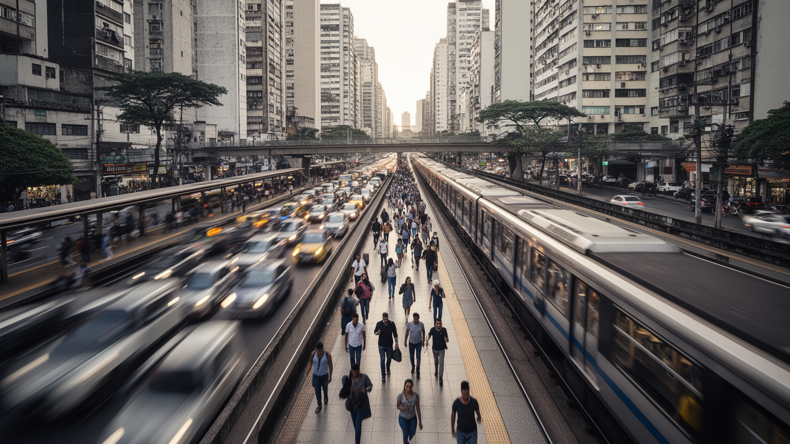
サンパウロの規模は、地図の広さより通勤時間で実感される。地下鉄、近郊鉄道、バス、専用レーン、配車サービス、オートバイ配送、自家用車が複雑に重なり、何百万人もの移動を支えている。地下鉄網は重要だが都市圏全体の広がりに比べると十分ではなく、バスに頼る地区では渋滞や乗換えが生活時間を奪う。道路は物流と通勤の生命線である一方、大気汚染、騒音、交通事故、時間の浪費を生む。オートバイ便やアプリ配送は都市の速度を上げるが、事故リスクと不安定な労働を伴う。空港は国内外のビジネスと移民の移動を結び、展示会や医療、大学へのアクセスを支える。交通政策は単なる便利さの問題ではなく、誰が仕事、教育、医療、文化に届けるかという平等の問題である。サンパウロの公共交通を読むことは、都市がどれほど広がり、どこで人の時間を消費しているかを読むことでもある。駅に近い地区では再開発と家賃上昇が起こり、遠い地区では移動費が家計を圧迫する。自転車道や歩行空間の整備は進むが、広い幹線道路と治安不安は徒歩の自由を制限する。移動の改善は環境政策でもあり、働く人の睡眠と家族時間を取り戻す社会政策でもある。通勤時間が長いほど、子育て、学習、休息、地域活動の余白は削られる。交通網は都市の骨格であると同時に、生活の質を分ける境界線でもある。
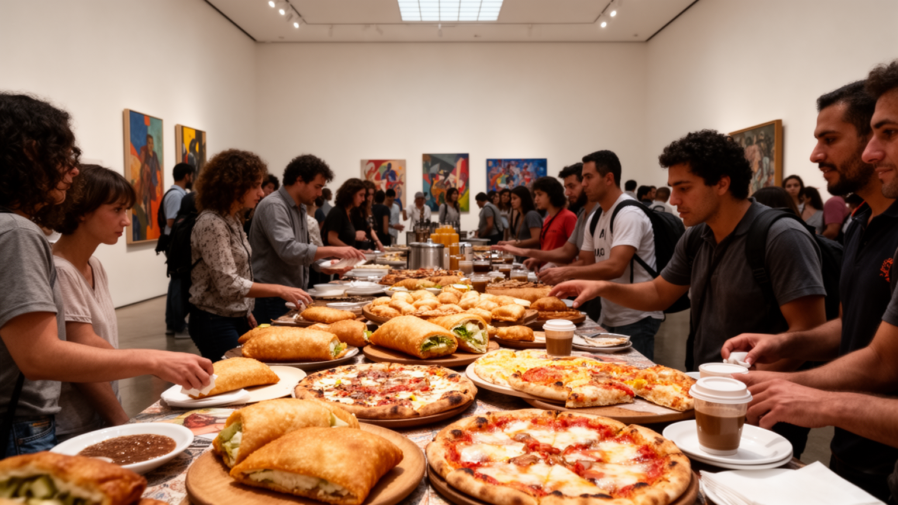
サンパウロの文化は、博物館や劇場だけでなく、食堂、市場、路上、スタジアム、クラブ、独立書店、移民街の店で育つ。サンパウロ美術館、ピナコテカ、劇場、映画祭、ビエンナーレは国際的な文化都市の顔を作り、グラフィティやヒップホップ、サンバ、ロック、電子音楽は街路の声を伝える。食文化ではピザ、パステル、フェイジョアーダ、日系料理、アラブ料理、北東部料理、現代的なレストランが並び、移民と国内移住の歴史が味として残る。市営市場や週末のフェイラは、観光客だけでなく住民の買い物と社交の場である。文化の豊かさは多様な出自の共存から生まれるが、制作現場には資金不足、家賃上昇、治安、検閲的な圧力、労働の不安定さもある。サンパウロを文化都市として読むには、洗練された施設と、日々の食や音楽を作る労働を同じ地図に置くことが必要である。サッカーはクラブの応援、地域の誇り、テレビ産業、街角の会話を結び、文化を階層横断的な経験にする。高級レストランと屋台、現代美術と壁画、交響楽と路上音楽が近くにあることが、この都市の厚みである。文化は消費される商品である前に、住民が自分の場所を主張する方法でもある。週末の市場や試合の日の街路には、制度化された文化施設とは別の公共性が現れる。そこでは食べること、応援すること、踊ることが都市への参加になる。
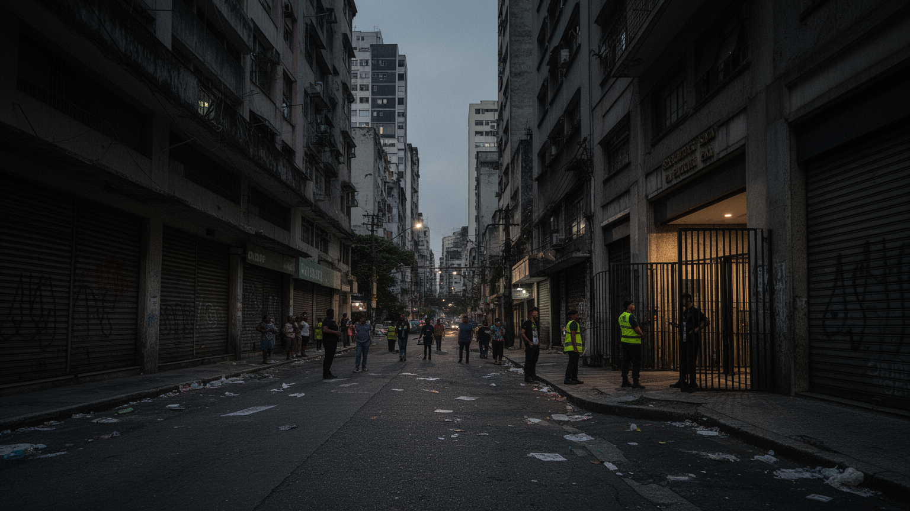
サンパウロは経済力の大きな都市であるほど、治安と社会問題が複雑に表れる。暴力犯罪は地域差が大きく、過去より改善した指標もあるが、住民の行動には警戒が残る。高い塀、警備員、防犯カメラ、配車アプリ、閉じた商業施設は安全を買う仕組みであり、同時に公共空間の分断を深める。薬物依存、ホームレス、若者の失業、警察暴力、刑務所組織の影響、家庭内暴力は、貧困や住宅政策、教育機会と切り離せない。中心部の再生計画は観光や投資を呼ぶが、路上で暮らす人や依存症の人をどこへ移すのかという難題を残す。安全は単に警察を増やすことではなく、照明、住宅、医療、精神保健、教育、雇用、地域の信頼を組み合わせて作られる。サンパウロの都市経験は、豊かな地区の安心と周縁の不安が同じ都市経済の中で結びついていることを示している。公共空間を避ける生活が広がると、街路の監視は強まっても、市民同士の接点は減ってしまう。子どもが遊べる広場、女性が夜に移動できる道、依存症の人が治療へ届く窓口は、都市の安全を測る具体的な指標になる。不安を個人の自衛だけに任せるほど、格差は見えない壁として固定される。社会問題を見えない場所へ押し出すだけでは、都市は安全にならない。弱い立場の人が街路から排除されるほど、公共空間は豊かな人だけのものになってしまう。
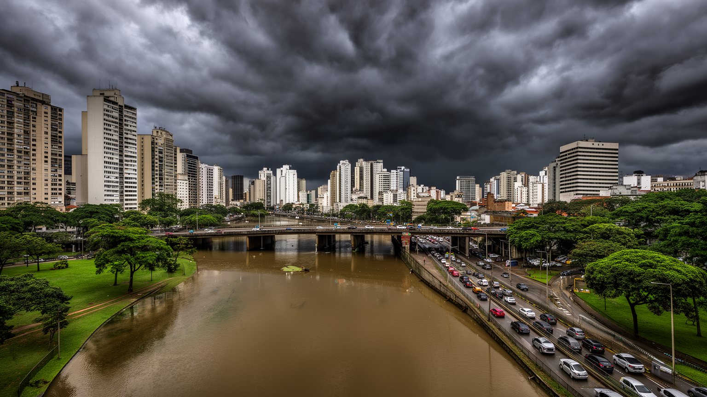
サンパウロの環境問題は、水と大気から見える。チエテ川やピニェイロス川は都市の拡大と道路建設、汚染、排水の歴史を背負い、河川再生は長年の課題である。夏の強い雨は短時間で道路や低地を冠水させ、交通を止め、住宅の脆弱な地区に大きな負担を与える。過去の水不足は、遠い水源に依存する巨大都市の危うさを示した。大気汚染は自動車交通、工業、乾燥した季節、地形条件と関係し、屋外労働者や子ども、高齢者に影響する。イビラプエラ公園や街路樹、貯水池周辺の緑は、余暇だけでなく暑熱を和らげる都市インフラでもあるが、緑地へのアクセスは均等ではない。環境政策は美化だけでなく、排水、公共交通、廃棄物、住宅、流域保全を一体で扱う必要がある。サンパウロの気候リスクは、都市の成長が自然の水の流れをどれほど変えたかを問い直している。舗装された谷底、暗渠化された小河川、斜面の住宅は、雨が強まる時代に弱点となる。水害は自然災害であると同時に、どの地区に排水投資が届いたかという社会問題でもある。緑地を増やし、公共交通を強め、貯水池周辺の無秩序な開発を抑えることは、都市の健康と公平性を守る政策である。水の管理に失敗すれば、金融街も周縁住宅地も同じ都市圏として影響を受ける。環境は背景ではなく、経済と暮らしを支える条件そのものである。今も。
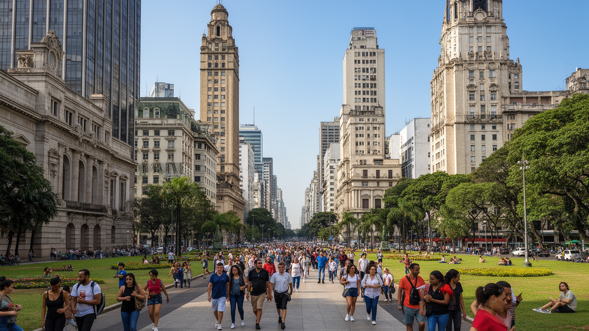
サンパウロ観光は、海や旧都の絵葉書的な景観とは違い、巨大都市の日常を読む旅になりやすい。パウリスタ大通りでは金融、デモ、美術館、自転車、日曜の歩行者空間が重なり、リベルダージでは日系文化とアジア系商業の変化が見える。市営市場、セー大聖堂、歴史的中心部、イビラプエラ公園、サッカー関連施設、ギャラリー、ライブハウス、レストランは、都市の多層性を短い滞在に凝縮する。観光客にとっては食と文化の選択肢が豊富で、国内外の航空便も多い。一方で、治安への注意、移動距離、渋滞、地区ごとの不均等な整備は旅の体験を左右する。中心部の建築遺産は保存と再開発の間で揺れ、空きビルの住宅化や文化利用も課題になる。サンパウロの魅力は美しい名所の列挙ではなく、移民、労働、格差、芸術、食、宗教が街路で交差する現実を歩いて感じられる点にある。旅の成功は、名所を効率よく巡ることだけでなく、地区ごとの距離感を理解することにある。昼と夜、徒歩と車、中心部と郊外では都市の表情が大きく変わる。ガイド付きの街歩きや美術館、食堂、市場を組み合わせると、サンパウロが観光都市である前に生活都市であることが見えてくる。訪問者が増えるほど、文化施設、清掃、警備、交通、飲食の仕事も増える。観光は街を見せる産業であり、同時に住民の生活空間を借りる行為でもある。
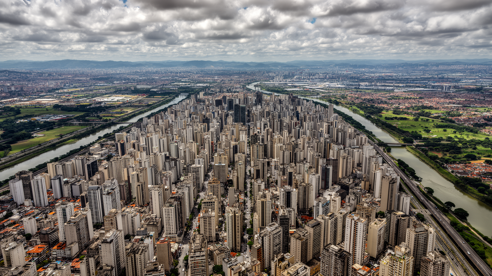
サンパウロは、南米の経済力、移民の歴史、都市格差、文化的な創造力を一つの都市圏に凝縮している。金融街の会議、工業地帯の記憶、地下鉄とバスの通勤、リベルダージの食堂、福音派教会の礼拝、カトリックの祭礼、アフロブラジル文化、サッカー、現代美術、中心部の路上生活は、別々の話ではなく同じ都市の断面である。経済規模だけを見れば強い都市だが、住宅、治安、水、交通、労働条件を見れば、その強さが誰の負担で維持されているのかが分かる。ブラジルの政治首都でなくても、サンパウロは投資、メディア、専門職、文化発信を通じて国の方向を左右する。都市を読む鍵は、華やかな消費と周縁の長い通勤、移民の活力と差別、宗教的な支えと政治的な対立を同時に見ることである。サンパウロは完成した成功都市ではなく、矛盾を抱えながら南米の未来を試している巨大な生活圏である。ここでは、近代化の夢と不平等の現実が毎日の移動と食事の中で交差する。高層ビルの足元に露店があり、世界企業の会議の近くで住宅運動が声を上げる。都市を評価するなら、資本を集める力だけでなく、住民が安全に移動し、働き、祈り、休める条件を見なければならない。南米を理解するうえで、サンパウロは避けて通れない。そこには成長の可能性と、成長だけでは解けない社会の緊張が同時に見える。